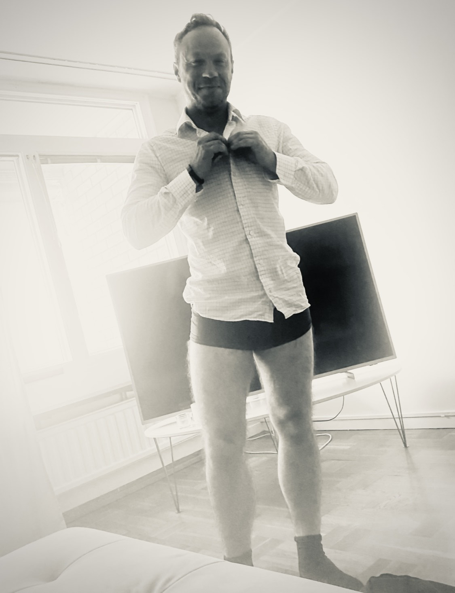

Redan vid första mötet så fanns han där, bakom det lätta, glatta, välpolerade sa jag honom en riktig ”ful i fan”.
Han som solat sig i slätstrukna skjortor, dyra putsade skor och kritvita linnebyxor.
Den jag sökt hela mitt liv, min ägare. Så utan ett motstånd i mig, som om tiggen om att få följa med ner i mörkrets riktiga smuts.
Det som alltid varit skönt, sakta började utveckla sig, mer bekvämlighet i varandras närvaro – vilket till slut bara handlade om ”jag söker dig, du gör henne sådär”, en hand runt halsen, sånt!
Väckte Rövjudet från en livstid av sömn till den grad att hon kunde känna när han ville.
Hon var så van att gå och känna, hon aldrig tidigare upplevt genom kroppen av välbehag, stundtals så starkt, så våldsamt att det skällde i köttet.
Känna hans närvaro, hur han gillade att iaktta henne i köket, vakta sitt byte, för att smyga upp bakom, ibland pressa henne mot diskbänken, ibland ta ett fastere grepp, den intensitet av blickar som sa ”du är min nu”. Intensiva ryck, upptryckt mot väggen, en body som drogs ner, blottade bröstvårtor och en kuk, mindre avsikt att snällt tillhöra – mer redo av stenhård när han tryckt in henne snävt mellan diskbänkens skinkor.
Hur hon kunde vakna mitt i natten bara för att smeka, känna hur hon darrade av kåthet, känna kroppen tigga, knäa, önska honom exakt hur och när han var där nere.
Hennes villighet att alltid be honom, be honom klättra hela vägen in i hennes rörelse.
Att det varit lätt att vara stark, men svårt att ge honom den ultimata känslan av att ge bort sig till just honom.
Hur hon låg där, lekte, kunde dra hans kuk fram och tillbaka, leva ut begäret, böja, blöda, vrida. Ibland med bojor som låstes. Ibland inte. Men alltid i samma förvissning om att han hade kunnat lyfta henne om inte fångat djup i den.
Att hon alltid kände, ett eget revir, att inget maktlöst hets, men att på sängkanten, lyfte händer för att han skulle kunna korsa gränsen, kunde gestalta hans längs med hennes och sätta honom där, just honom – när det inte längre handlade om att äga, utan om att tillhöra.
Det är något i att förvalta sin goda hud, sin tillhörighet – hos honom och komma för evigt att stanna där.